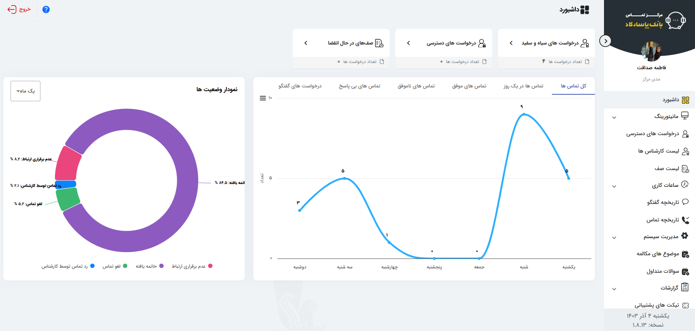
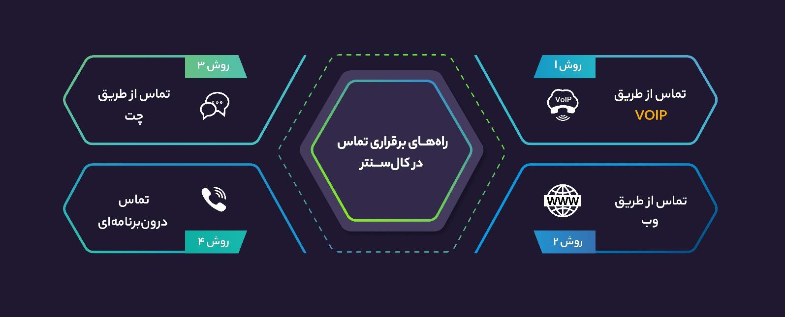

مانیتورینگ
مشاهده وضعیت کارشناسان، تماسها، صفها و شاخصهای عملیاتی در یک نمای مدیریتی.
Callsee بستری یکپارچه برای مدیریت تماسها، پایش عملکرد کارشناسان، گزارشگیری تحلیلی و تجربه تماس تحت وب است. این صفحه، مسیر سریع شما برای شناخت محصول و دسترسی به مستندات است.

ساختار Callsee برای نقشهای مدیریتی، کارشناسی و تماسگیرنده طراحی شده است. مدیر میتواند جریان تماسها و عملکرد تیم را پایش کند، کارشناس تماسها و گفتگوها را مدیریت کند و تماسگیرنده از کانالهای وب و VoIP با مرکز تماس در ارتباط باشد.

از کنترل وضعیت کارشناسان تا گزارشهای مدیریتی و تماس آنلاین، بخشهای کلیدی Callsee در یک محیط واحد در دسترساند.
مشاهده وضعیت کارشناسان، تماسها، صفها و شاخصهای عملیاتی در یک نمای مدیریتی.
گزارشهای تجمیعی، وضعیت کارشناسان، نرخ تماسها، میانگین زمان پاسخ و شاخصهای عملکردی.
مدیریت تماسهای ورودی و خروجی و پشتیبانی از سناریوهای تماس تحت وب و VoIP.
دسترسی به جزئیات تماسها، وضعیت، سوابق و اطلاعات مورد نیاز برای پیگیری بهتر.
مشاهده و مدیریت کاربران، دسترسیها، وضعیت پاسخگویی و فعالیت کارشناسان.
تاریخچه گفتگو، سوالات متداول و تیکتهای پشتیبانی در کنار فرایند تماس.
تصاویر زیر مستقیماً از مستندات رسمی سامانه استخراج شدهاند. برای بزرگنمایی روی هر تصویر کلیک کنید.
فصلهای اصلی راهنما را جستجو کنید یا نسخه کامل PDF را باز کنید. ساختار این بخش برای تبدیل شدن به یک Documentation Portal چندصفحهای هم آماده است.
محصول را ببینید، امکانات را بشناسید و از مستندات رسمی برای راهاندازی و استفاده روزمره کمک بگیرید.